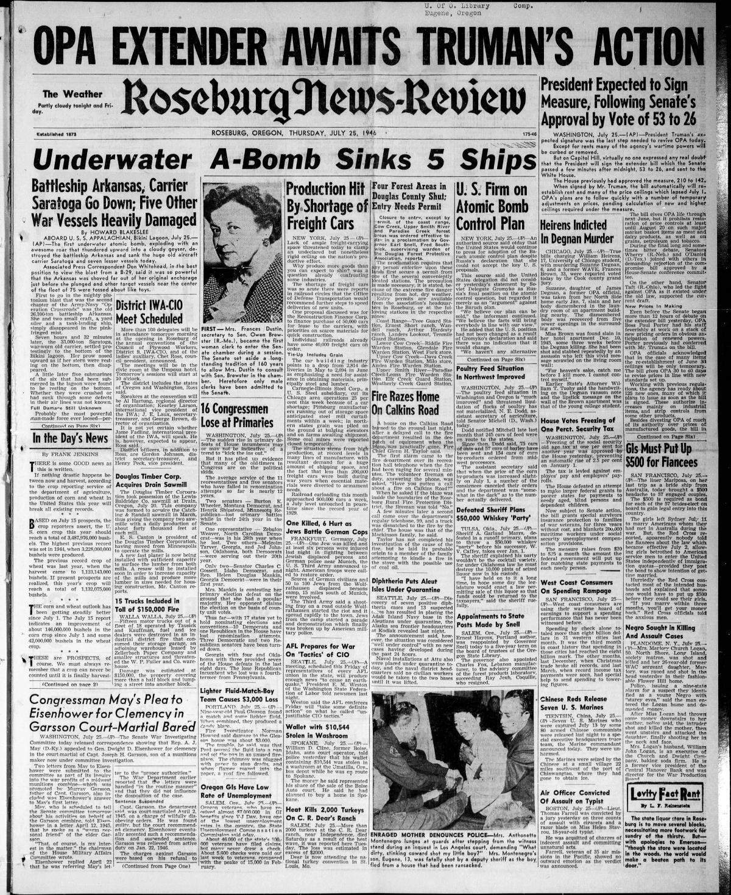
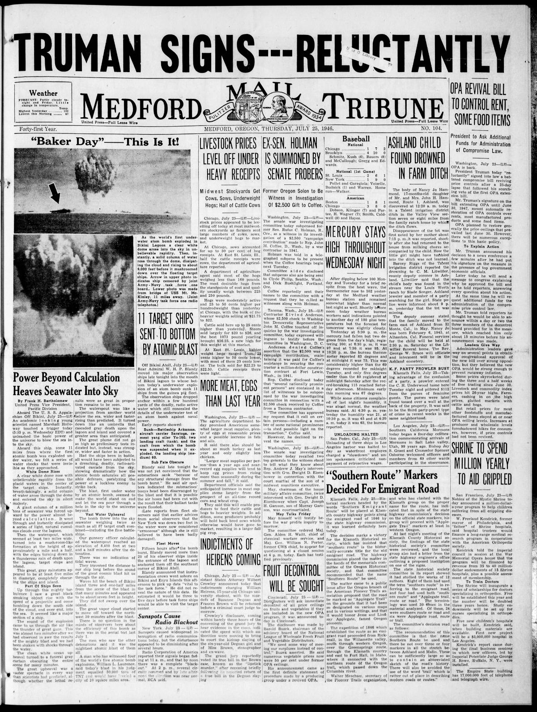
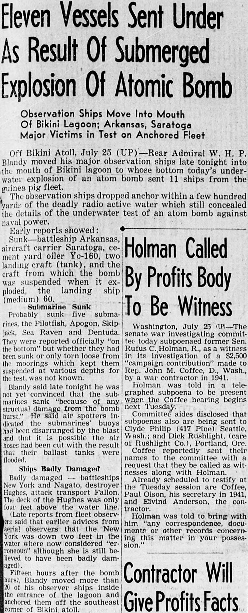
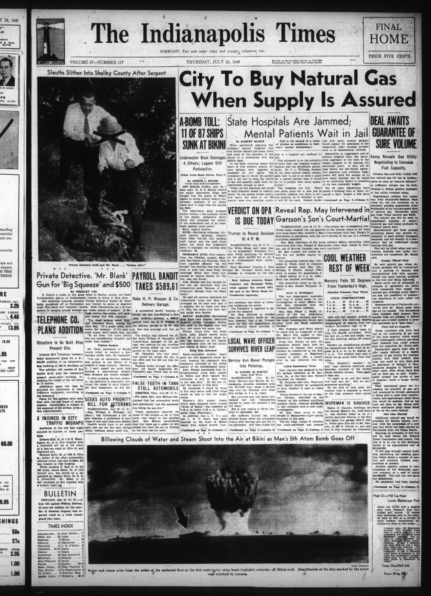
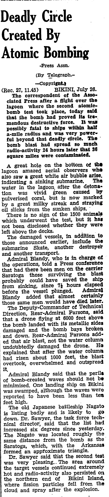

HN-558 · July 25, 1946 · Science, Invention & Technology > Physics, Chemistry & Material Sciences > Nuclear science
Source: Indianapolis Times, p. 1 — original page; National Park Service, Marshall Islands.
Report: A headline announced an atomic-bomb toll on ships at Bikini, reporting destruction associated with the second test. The same front page also covered Indiana's strained mental-hospital capacity, a reminder that a page's main story is not its only news.
Assessment: Baker was detonated underwater on July 25, unlike the July 1 airburst (
Identity-review candidate peers: HN-557:Algorithmic
Authentic images retrieved from Historic Oregon Newspapers (University of Oregon), Hoosier State Chronicles (Indiana State Library) and Papers Past (National Library of New Zealand). Article crops are located using the archive's own OCR word coordinates and rendered at native crop resolution; article clips are assembled from the archive's own article-block images; page images marked "archive tiles" are stitched from the archive's own tiled page service at its 256-px tile cap; page images marked "issue PDF" are single pages rasterised from the archive's own issue PDF, with the page chosen by matching the headline against the PDF's text layer; page scans are reduced-size access renditions. No images were generated, mocked, or retouched.





Status: Archive images acquired
Authentic archive-owned image renditions were retrieved for this record and are displayed above. The source-acquisition manifest preserves the original pre-acquisition feasibility assessment.
URL (preserved verbatim): https://newspapers.library.in.gov/?a=d&d=IPT19460725.1.1
Saved research report: Historical_Newspaper_Event_Research_553-577_2026-10-23.md
Evidence note: A newspaper report means a historical publication made a claim; it does not establish that claim as fact. Contemporary reporting is separated from later scholarly context and our own assessment.